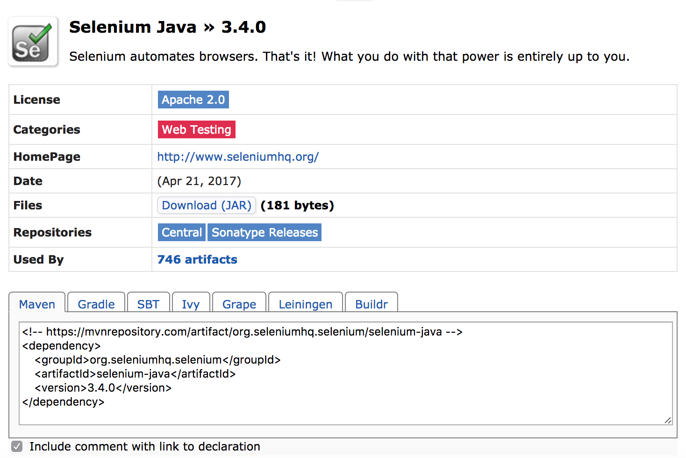
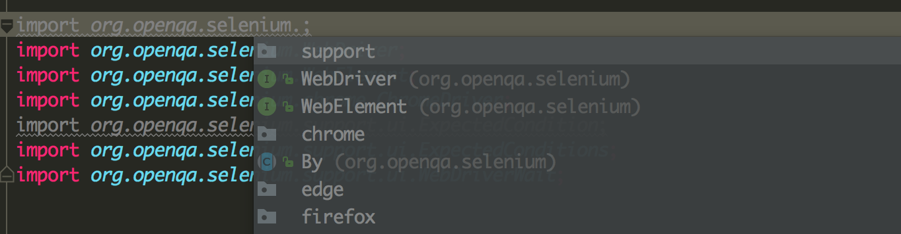

在Mac上基于Intellij IDEA的Selenium的简单配置
看前需要注意的：
1. 此文没有JDK配置教程
2. 此文没有IDEA安装教程
3. 此文只有IDEA的Selenium配置教程
添加Selenium对应的Jar包
需要创建Maven工程
工程创建完成后打开pom.xml，添加如下代码备用：
1 2 3
| <dependencies> </dependencies>
|
添加后如下：
1 2 3 4 5 6 7 8 9 10 11 12 13 14 15 16
| <?xml version="1.0" encoding="UTF-8"?> <project xmlns="http://maven.apache.org/POM/4.0.0" xmlns:xsi="http://www.w3.org/2001/XMLSchema-instance" xsi:schemaLocation="http://maven.apache.org/POM/4.0.0 http://maven.apache.org/xsd/maven-4.0.0.xsd"> <modelVersion>4.0.0</modelVersion> <groupId>Selenium</groupId> <artifactId>Selenium_Demo</artifactId> <version>1.0-SNAPSHOT</version> <dependencies> </dependencies> </project>
|
打开Maven Repository找到当前最新版3.4.0
此链接如果打不开请自行搜索

将上图中的Maven标签下的代码复制到pom.xml中
1 2 3 4 5 6 7 8 9 10 11 12 13 14 15 16 17 18 19 20 21 22
| <?xml version="1.0" encoding="UTF-8"?> <project xmlns="http://maven.apache.org/POM/4.0.0" xmlns:xsi="http://www.w3.org/2001/XMLSchema-instance" xsi:schemaLocation="http://maven.apache.org/POM/4.0.0 http://maven.apache.org/xsd/maven-4.0.0.xsd"> <modelVersion>4.0.0</modelVersion> <groupId>Selenium</groupId> <artifactId>Selenium_Demo</artifactId> <version>1.0-SNAPSHOT</version> <dependencies> <dependency> <groupId>org.seleniumhq.selenium</groupId> <artifactId>selenium-java</artifactId> <version>3.4.0</version> </dependency> </dependencies> </project>
|
点击IDEA右下方的Enable Auto-Import，等待自动导入jar包。
上一步成功后，在Java文件中导入Selenium相关包时会有提示，如：

ChromeDriver文件下载好后，移动或复制到/usr/local/bin
ChromeDriver官方下载地址，版本2.30